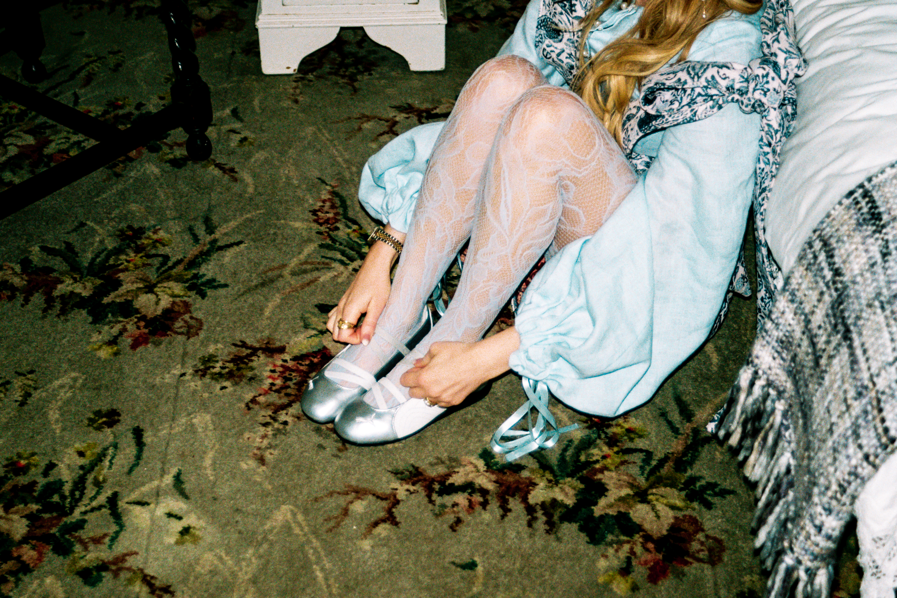

Contemporary Irish design, rooted in heritage.
Statement clothing shaped by heritage, contemporary street style and a belief that the pieces we wear should have more than one life.
Clothing designed to be worn, changed and worn again.
Sperrin Design combines the influence of rural Irish heritage with the energy of contemporary Belfast street style.
Garments are created with adaptability in mind, giving the wearer freedom to change how a piece looks and feels rather than replacing it when the moment has passed.
Discover Sperrin DesignDesigned with purpose.


From modular details to carefully selected fabrics, each piece is considered with longevity, individuality and versatility in mind.
Explore the collectionsAvailable Pieces
Sperrin Design creates statement pieces designed to be worn, altered and reworn.
Explore the current selection of available garments, created with sustainability and individuality at their core.
Visit the StoreLet's work together.
Interested in Sperrin Design, collaborations, or finding out more about the brand?
Get in touch